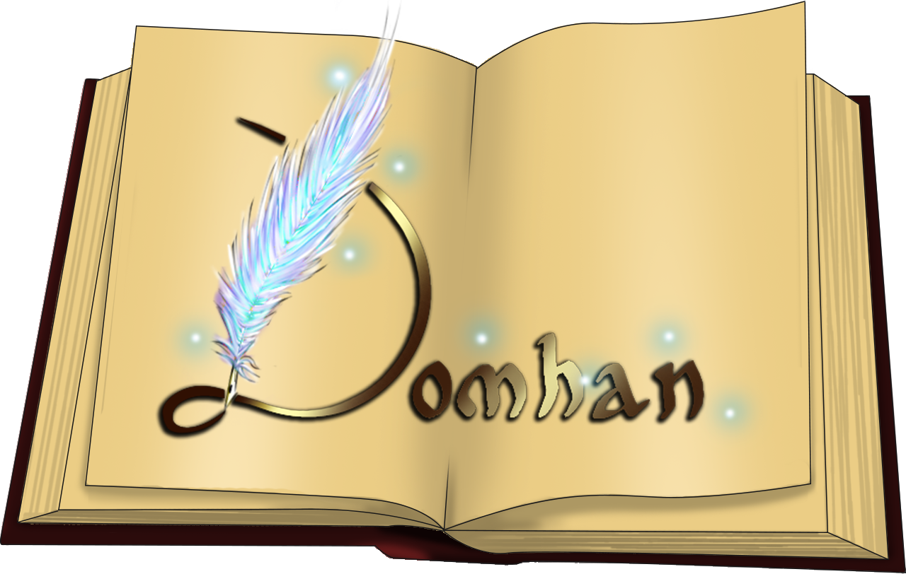

Toggle navigation
Domhan
Code
Règlement
Guide du nouveau
F.A.Q.
Crédits
Encyclopédie
Le vivant
Races et Peuples
Bestiaire
Personnages
Esotérisme
Panthéon
Magie
Cultures
Calendrier
Système monétaire
Astronomie
Contexte
Géopolitique
Carte du monde
Géographie
Histoire
Frise chronologique
Légendes

Système
Forum
Contact
A propos
Qui sommes-nous?
Réseaux Sociaux
Nous contacter